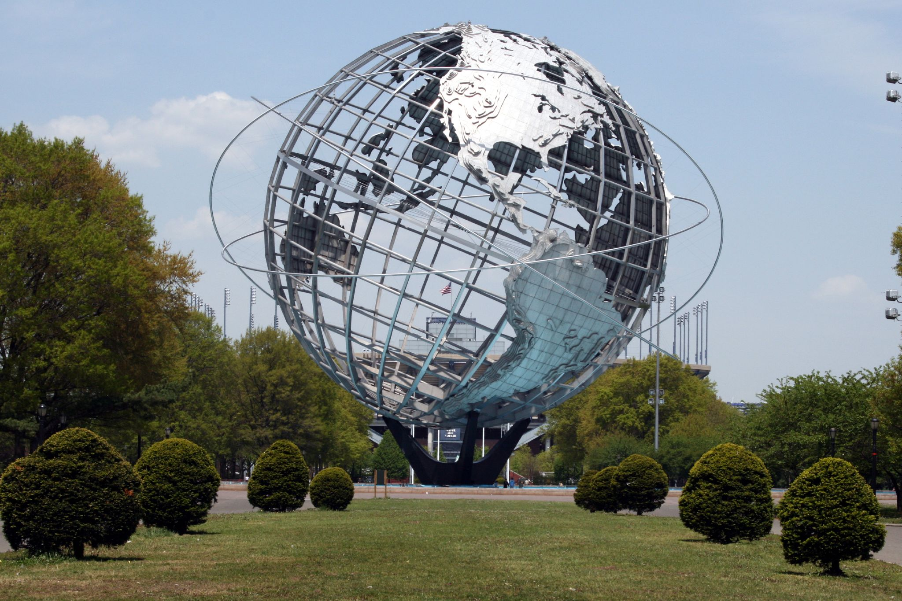

| Photo | Description |
|---|---|
|  | Flushing Meadows-Corona Park: The symbol of Queens, the Unisphere is a giant globe in Flushing Meadows-Corona Park. It's a great spot to hang out and catch Queens at play: walking, biking, skating, running, barbecuing, and playing soccer. Next door is the Queens Museum of Art with its Panorama of New York City, an incredibly detailed scale model of the entire city. It is so well composed that you can pinpoint specific houses, even find your own home. The Panorama has been delighting visitors since the World's Fair in 1964. |
| Museum of the Moving Image: The Museum of the Moving Image in Astoria, Queens, celebrates the history, technology, and art of movies. It is a great museum with a balance of hands-on activities and information that will interest youngsters and adults. Dub your voice in the Wizard of Oz, see how short Robert De Niro is, and create your own animations. On the weekends, enjoy a screening of a classic or foreign movie in the Rilke’s Theater. This museum will delight anyone who loves movies. | |
| Jackson Heights: The streets of Jackson Heights are lined with gold! Well, not exactly. A row of 22k gold jewelry shops light up 74th Street. It's the main drag of an Indian/South Asian enclave, and has some of the best eating in all of NYC (delicious curries, tandoori, nan, dosas, kebabs, Indian sweets, and more). There's lots of cool shopping -- saris, bhangra music, Bollywood DVDs -- and even a Bollywood movie theater. This fascinating Little India is a great place to experience Queens' famed diversity. | |
| MoMA PS1: In Long Island City, MoMA PS1 is an internationally renowned museum devoted to contemporary art. Housed in a former public high school, MoMA PS1 has managed to keep cutting the cutting edge even as it has matured as an institution. This is one of the best major art spaces in NYC. | |
| Fort Tilden: The Rockaways have a long history of military use and records exist of a blockhouse initially constructed on the peninsula during the War of 1812. The piece of land now known as Fort Tilden was already being used as a Coast Guard Station when it was officially named for former New York Governor Samuel J. Tilden on August 1, 1917. Later, the Cold War brought anti-aircraft guns and Nike Missiles to Fort Tilden before the site was deactivated in 1974. It is now part of the Gateway National Recreation Area. |